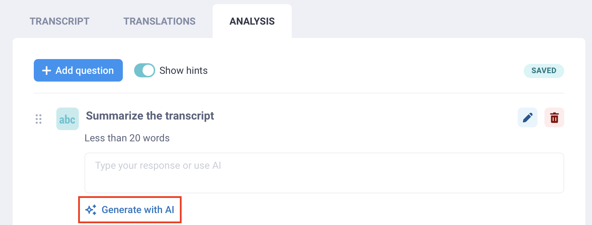
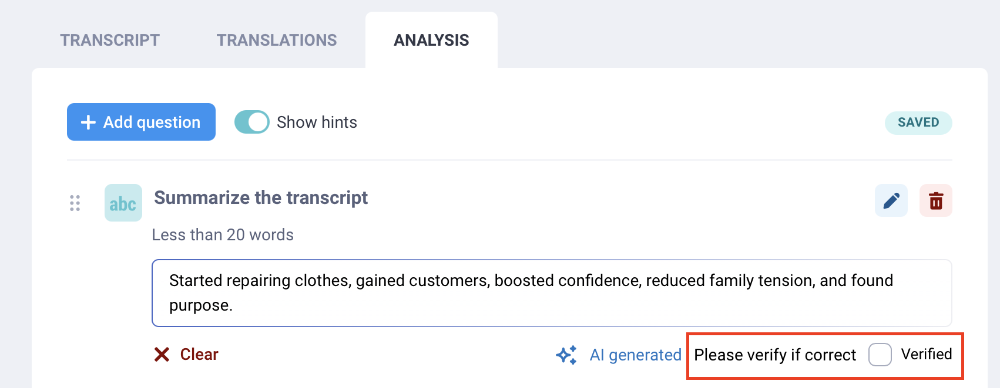
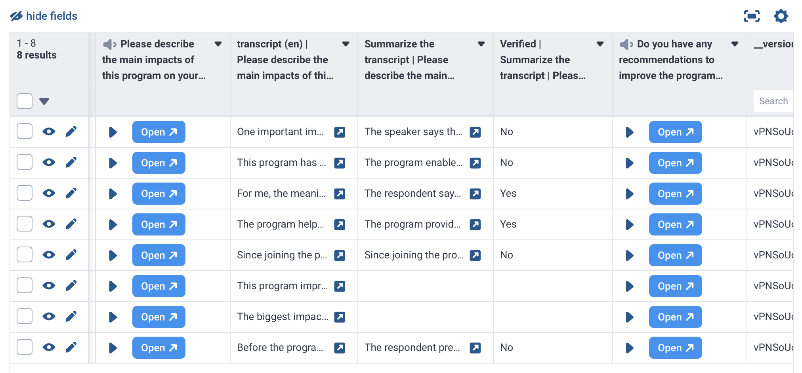
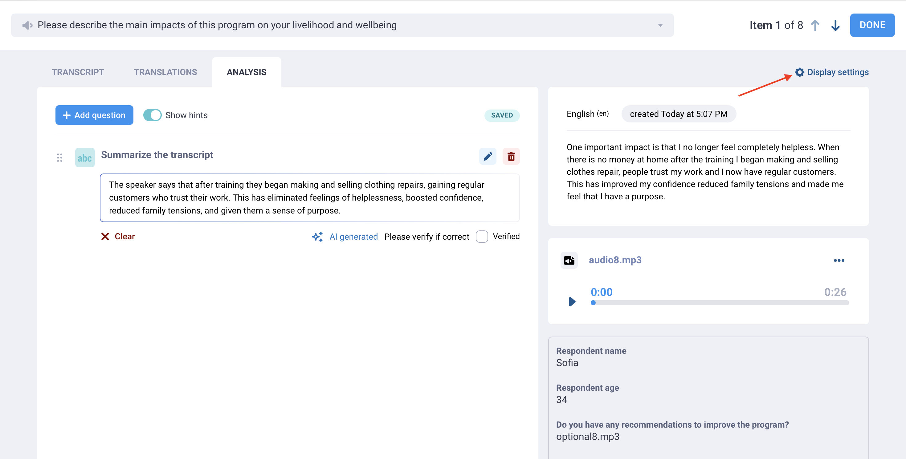
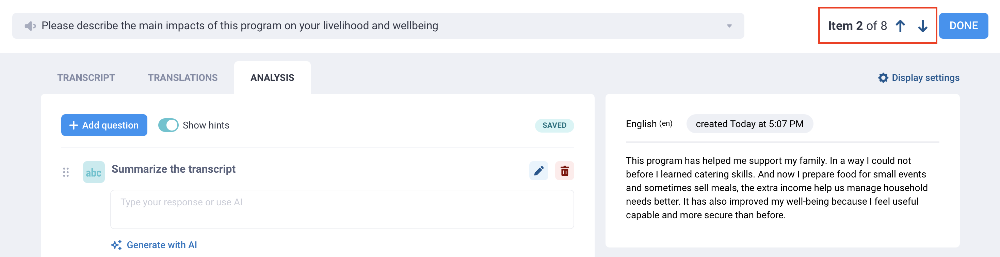
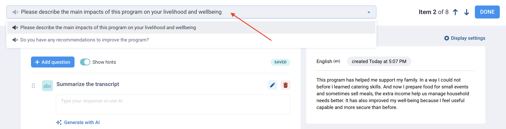

Parcourez la base de connaissances, explorez nos ressources et visitez notre Forum communautaire pour des informations plus détaillées
Dernière mise à jour : 22 juin 2026
L’analyse qualitative permet de transformer des réponses ouvertes en résultats clairs et exploitables. Elle est particulièrement utile dans le cadre de la recherche et des interventions d’urgence, où des informations contextuelles importantes peuvent être manquées si l’on se limite aux données quantitatives.
Avec KoboToolbox, vous pouvez analyser les réponses aux questions audio ouvertes directement dans l’interface utilisateur. Grâce aux questions d’analyse qualitative, vous pouvez résumer, catégoriser et décrire chaque réponse, puis enregistrer ces résultats sous forme de nouvelles colonnes dans votre base de données. Vous pouvez soit analyser les données manuellement, soit utiliser l’intelligence artificielle (IA).
Cet article explique comment créer des questions d’analyse, analyser les réponses manuellement ou avec l’IA, examiner et vérifier les résultats, personnaliser les paramètres d’affichage et naviguer entre les réponses lors de l’analyse.
Avant d’utiliser les fonctionnalités d’analyse qualitative, assurez-vous que les conditions suivantes sont remplies :
Votre formulaire doit inclure au moins une question Audio ou avoir activé l”enregistrement audio d’arrière-plan.
Votre projet doit contenir au moins une soumission avec des fichiers audio.
Pour l”analyse automatisée, les fichiers audio doivent d’abord être transcrits, car l’analyse est générée à partir de la transcription originale de l’audio.
Pour l”analyse manuelle, il est recommandé, mais non obligatoire, de transcrire vos fichiers audio avant de commencer.
Note : L'analyse qualitative est actuellement disponible uniquement pour les réponses audio, y compris les enregistrements audio d'arrière-plan. Elle n'est pas encore disponible pour les réponses de type texte ou autres.
Pour créer des questions d’analyse qualitative, ouvrez l’interface d’analyse audio de votre projet :
Ouvrez votre projet et accédez à DONNÉES > Tableau.
Cliquez sur Ouvrir dans la cellule de la réponse audio que vous souhaitez analyser.
Ouvrez l’onglet ANALYSE.

Une fois dans l’onglet ANALYSE, vous pouvez ajouter des questions d’analyse pour générer des résultats à partir de chaque réponse audio :
Cliquez sur Ajouter une question.
Sélectionnez le type de question que vous souhaitez utiliser (par exemple, Texte ou Choix unique).
Saisissez un libellé pour la question d’analyse (par exemple, « Résumer la réponse » ou « Sélectionner les thèmes mentionnés dans la réponse »).
Ce libellé devient le nom du champ dans votre base de données.
Ajoutez des choix de réponse si nécessaire.

Chaque question d’analyse que vous créez apparaîtra dans l’onglet ANALYSE pour les autres réponses à la même question audio.
Note : Vous pouvez également ajouter des indices aux questions d'analyse ou aux choix de réponse, par exemple pour inclure des informations issues d'un livre de codes ou des instructions destinées aux codeurs.
Les types de questions suivants sont disponibles pour les questions d’analyse :
Type de question |
Description |
|---|---|
Tags |
Ajoutez des mots-clés ou des thèmes pour décrire la réponse audio. |
Texte |
Ajoutez une réponse textuelle libre, telle qu’un résumé, des notes ou une impression générale. |
Chiffre |
Enregistrez un nombre, par exemple le nombre de fois qu’un thème est mentionné. |
Choix unique |
Sélectionnez une option dans une liste, par exemple le thème principal ou le niveau de satisfaction perçu. |
Choix multiple |
Sélectionnez une ou plusieurs options dans une liste, par exemple les thèmes ou les obstacles mentionnés dans la réponse. |
Note |
Ajoutez des instructions ou des intitulés de section pour organiser l’espace de travail d’analyse. |
Chaque champ que vous ajoutez devient une nouvelle colonne dans votre base de données lors du téléchargement de vos données, à l’exception des champs Note.
Note : L'analyse automatisée ne peut pas être utilisée avec les questions d'analyse de type Tags. Les tags ne peuvent être générés que manuellement.
Les indices peuvent contribuer à rendre votre analyse plus cohérente, que les réponses soient examinées par des codeurs humains ou générées avec l’IA. Lors de la création des questions d’analyse, utilisez les indices pour expliquer comment chaque question doit être traitée.
Vous pouvez ajouter des indices aux questions d’analyse ainsi qu’aux choix de réponse.
Par exemple, vous pouvez utiliser les indices pour inclure :
Un livre de codes ou un cadre de codage complet
Des définitions pour les tags, catégories ou thèmes
Des exemples d’application de chaque choix de réponse
Des instructions pour traiter les réponses peu claires ou incomplètes
Toute consigne que vous donneriez normalement à un codeur humain
Des instructions de type invite pour l’analyse générée par l’IA

Les indices peuvent être particulièrement utiles lors de l’utilisation de l’IA, car ils fournissent à l’IA davantage de contexte sur la manière d’interpréter la réponse audio et sur la façon dont l’analyse doit être structurée.
Les indices n’ont pas de limite de longueur, vous pouvez donc inclure des instructions détaillées si nécessaire. Nous recommandons de rédiger des indices clairs et précis afin qu’ils soient faciles à suivre, tant pour les membres de l’équipe que pour les outils d’IA.
Note : Si vos indices sont très longs, par exemple des instructions détaillées pour des réponses générées par l'IA, vous pouvez désactiver le bouton Afficher les indices en haut de la fenêtre ANALYSE pour les masquer.
Une fois les questions d’analyse créées, vous pouvez commencer à analyser les réponses manuellement ou utiliser l’IA pour générer une réponse :
Pour l’analyse manuelle : Saisissez manuellement une réponse pour chaque question d’analyse.
Pour l’analyse automatisée : Cliquez sur Générer avec l’IA sous chaque question d’analyse.
Après avoir généré des réponses d’analyse automatisées, vous pouvez les examiner et les modifier si nécessaire.

Note : Une réponse générée par l'IA sera accompagnée de la mention Généré par l'IA sous la question.
Pour l’analyse manuelle comme pour l’analyse générée par l’IA, vous pouvez examiner chaque réponse et la marquer comme vérifiée. Cela peut faciliter le contrôle qualité, que vous vérifiiez le codage au sein d’une équipe ou que vous confirmiez l’exactitude d’une réponse générée par l’IA.
Pour vérifier une réponse, cochez la case Vérifié en dessous. Si vous laissez la case décochée, le résultat de l’analyse sera tout de même enregistré, mais votre équipe pourra voir qu’il n’a pas encore été examiné.

Lorsque vous avez terminé l’analyse de vos fichiers audio, chaque champ d’analyse est enregistré sous forme de nouvelle colonne dans votre base de données. Votre base de données inclura également une colonne Vérifié avec les valeurs Oui ou Non.

Vous pouvez exporter vos données avec ces champs d’analyse pour un examen approfondi, une synthèse ou la production de rapports. Par exemple, vous pouvez les utiliser pour suivre la fréquence d’apparition de thèmes spécifiques dans vos transcriptions, ou pour créer un livre de codes basé sur les Tags les plus récurrents.
Note : Lors de l'export de vos données, une colonne supplémentaire est incluse pour indiquer la source de l'analyse, précisant si l'analyse a été effectuée manuellement ou générée par l'IA.
Par défaut, le panneau d’affichage situé à droite de l’écran ANALYSE affiche l’enregistrement audio, la transcription originale et les réponses aux autres questions.
Vous pouvez modifier l’affichage pour inclure les informations qui correspondent le mieux à votre analyse. Par exemple, si vous travaillez dans plusieurs langues, vous pouvez afficher une traduction ou masquer la transcription originale.
Pour modifier l’affichage :
Cliquez sur Paramètres d’affichage en haut à droite.
Sélectionnez les informations que vous souhaitez afficher.

Vous pouvez choisir d’afficher ou de masquer :
L’enregistrement audio
Les réponses aux autres questions du formulaire
La transcription originale
Les traductions de la transcription
Si l’enregistrement n’a pas été transcrit, seuls l’enregistrement audio et les données de soumission seront disponibles.
Note : Pour en savoir plus sur la transcription et la traduction des réponses audio dans KoboToolbox, consultez l'article Transcription et traduction de réponses audio.
Vous ne pouvez analyser qu’une seule réponse audio à la fois, mais vous pouvez naviguer facilement entre les réponses et les questions.
Pour passer à la soumission suivante ou précédente, utilisez les flèches situées à gauche du bouton TERMINÉ.

Pour passer à une autre question audio au sein de la même soumission, utilisez le menu déroulant en haut de l’écran et sélectionnez la question que vous souhaitez analyser. Vous pourrez ajouter de nouvelles questions d’analyse pour cette question audio.

Les utilisateurs du plan Community peuvent effectuer jusqu’à 25 demandes d’analyse générée par l’IA gratuitement. Chaque fois que vous cliquez sur Générer avec l’IA, cela compte comme une demande. Les limites suivantes s’appliquent aux plans KoboToolbox payants :
Plan |
Limites |
|---|---|
Professional |
1 000 demandes d’analyse |
Teams |
2 000 demandes d’analyse |
Enterprise |
30 000 demandes d’analyse |
Si vous avez besoin de davantage de demandes d’analyse générée par l’IA, vous pouvez passer à une offre supérieure avec un quota plus élevé ou acheter un module complémentaire de demandes d’analyse automatique. Les modules complémentaires sont disponibles selon vos besoins en analyse de données, à partir de 15 $ pour 2 000 demandes supplémentaires. Vous pouvez toujours continuer à utiliser les fonctionnalités d’analyse manuelle sans limite d’utilisation.
Afin de garantir la confidentialité et la fiabilité lors de l’analyse de transcriptions d’entretiens ouverts, KoboToolbox héberge de manière sécurisée un modèle d’IA open source (gpt-oss-120b) dans son propre environnement serveur, plutôt que d’envoyer les données à un fournisseur d’IA commercial. Vos données ne sont jamais partagées avec une entreprise d’IA tierce externe, et vous conservez un contrôle total sur vos informations.
Les modèles open source offrent une plus grande transparence sur la façon dont les données sont traitées. Les transcriptions soumises à l’analyse ne sont jamais utilisées pour entraîner, conserver ou améliorer le modèle d’IA sous-jacent.
Par rapport aux fournisseurs d’IA commerciaux, qui mettent fréquemment à jour leurs modèles en arrière-plan et peuvent appliquer des filtres susceptibles d’affecter l’analyse de sujets complexes ou sensibles, les modèles open source offrent une plus grande stabilité et cohérence tout au long du cycle de vie d’un projet. Cela contribue à fournir une base plus neutre et prévisible pour la recherche qualitative.
Nos fonctionnalités d’analyse par IA ont été largement testées en comparaison avec des codeurs humains et plus de 40 modèles d’IA commerciaux et open-weight, afin de garantir des résultats de haute qualité et fiables.
Avez-vous trouvé ce que vous cherchiez ? Les informations étaient-elles claires ? Manquait-il quelque chose ?
Partagez vos commentaires pour nous aider à améliorer cet article !